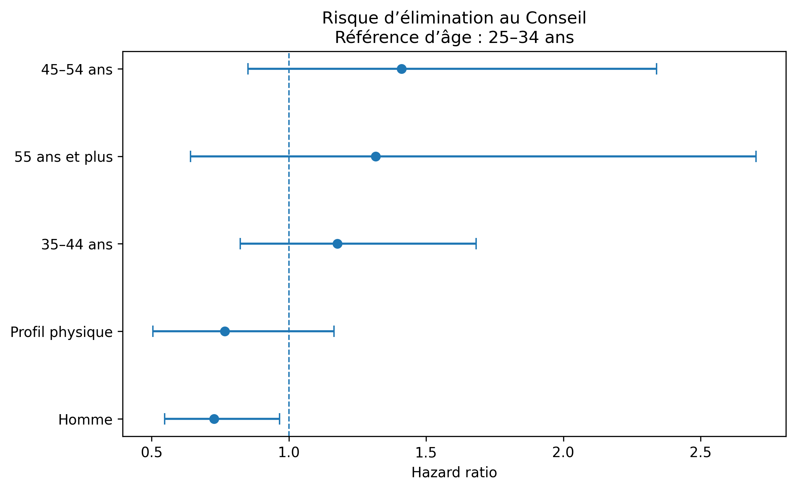
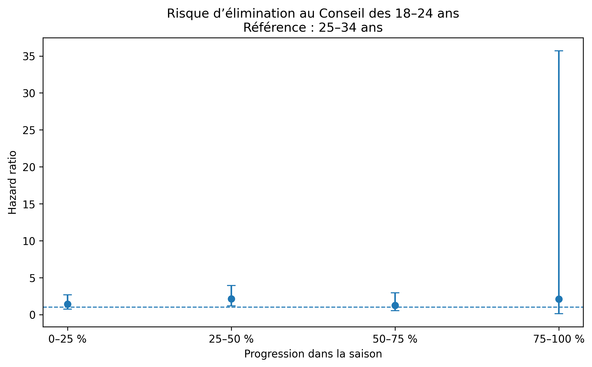
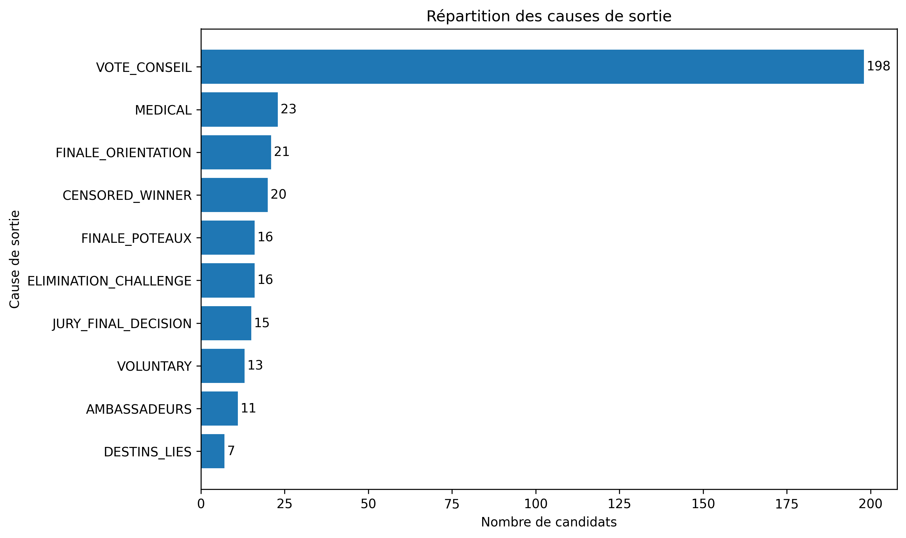
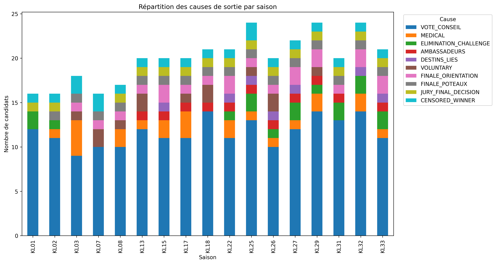

Le modèle de Cox spécifique au Conseil est stratifié par saison. Les autres mécanismes de sortie sont censurés au moment où ils surviennent.
| Variable | HR | IC95 % | p | Interprétation |
|---|---|---|---|---|
| Homme | 0.73 | [0.55 ; 0.97] | 0.0279 | Risque d’élimination au Conseil plus faible |
| Profil physique | 0.77 | [0.50 ; 1.16] | 0.2133 | Association non démontrée |
| 35–44 ans | 1.18 | [0.82 ; 1.68] | 0.3704 | Comparaison avec les 25–34 ans |
| 45–54 ans | 1.41 | [0.85 ; 2.34] | 0.1822 | Comparaison avec les 25–34 ans |
| 55 ans et plus | 1.32 | [0.64 ; 2.70] | 0.4535 | Comparaison avec les 25–34 ans |
| 18–24 ans, phase 0–25 % | 1.40 | [0.73 ; 2.68] | 0.3091 | Pas de différence démontrée |
| 18–24 ans, phase 25–50 % | 2.14 | [1.17 ; 3.94] | 0.0139 | Environ deux fois plus de risque au Conseil |
| 18–24 ans, phase 50–75 % | 1.23 | [0.51 ; 2.95] | 0.6411 | Pas de différence démontrée |
| 18–24 ans, phase 75–100 % | 2.09 | [0.12 ; 35.69] | 0.6107 | Estimation très imprécise en fin de saison |
Les modèles concernant les sorties médicales, les poteaux, les ambassadeurs, les abandons et le jury final comportent peu d’événements. Ils doivent être considérés comme exploratoires.
| Cause | Variable | HR | IC95 % | FDR | Événements |
|---|---|---|---|---|---|
| JURY_FINAL_DECISION | age_18_24 | 2.81 | [1.49 ; 5.31] | 0.0350 | 3 dans le groupe exposé |
Le signal concernant les 18–24 ans et la défaite au jury final repose sur seulement trois événements dans cette tranche d’âge. Il est donc exploratoire.
Le résultat VOLUNTARY × age_55_plus est écarté, car aucun candidat de 55 ans ou plus n’a abandonné volontairement. Le hazard ratio produit dans ce cas est un artefact de groupe vide.
Le mécanisme le mieux documenté est l’élimination au Conseil. Le sexe et l’âge en début ou milieu d’aventure semblent davantage associés au risque stratégique que le score physique. Les résultats concernant les mécanismes plus rares doivent rester présentés comme des signaux exploratoires.



